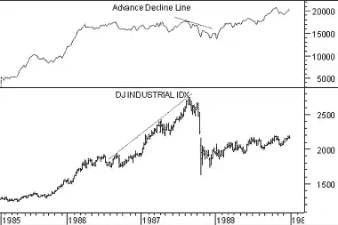

The Advance/Decline Line ("A/D Line") is undoubtedly the most widely used measure of market breadth. It is a cumulative total of the Advancing-Declining Issues indicator. When compared to the movement of a market index (e.g., Dow Jones Industrials, S&P 500, etc) the A/D Line has proven to be an effective gauge of the stock market's strength.
The A/D Line is helpful when measuring overall market strength. When more stocks are advancing than declining, the A/D Line moves up (and vice versa).
Many investors feel that the A/D Line shows market strength better than more commonly used indices such as the Dow Jones Industrial Average ("DJIA") or the S&P 500 Index. By studying the trend of the A/D Line you can see if the market is in a rising or falling trend, if the trend is still intact, and how long the current trend has prevailed.
Another way to use the A/D Line is to look for a divergence between the DJIA (or a similar index) and the A/D Line. Often, an end to a bull market can be forecast when the A/D Line begins to round over while the DJIA is still trying to make new highs. Historically, when a divergence develops between the DJIA and the A/D Line, the DJIA has corrected and gone the direction of the A/D Line.
A military analogy is often used when discussing the relationship between the A/D Line and the DJIA. The analogy is that trouble looms when the generals lead (e.g., the DJIA is making new highs) and the troops refuse to follow (e.g., the A/D Line fails to make new highs).
The following chart shows the DJIA and the A/D Line.
 The DJIA was making new highs during the 12 months leading up to the 1987 crash. During this same period, the A/D Line was failing to reach new highs. This type of divergence, where the generals lead and the troops refuse to follow, usually results in the generals retreating in defeat as happened in 1987.The A/D Line is calculated by subtracting the number of stocks that declined in price for the day from the number of stocks that advanced, and then adding this value to a cumulative total.
Table 2 shows the calculation of the A/D line.
| Table 2 | ||||
| Date | Advancing | Declining | A-D | A/D Line |
| 02/15/94 | 1198 | 882 | 316 | 316 |
| 02/16/94 | 1183 | 965 | 218 | 534 |
| 02/17/94 | 882 | 1251 | -369 | 165 |
| 02/18/94 | 706 | 1411 | -705 | -540 |
| 02/22/94 | 1139 | 1003 | 136 | -404 |
Because the A/D Line always starts at zero, the numeric value of the A/D Line is of little importance. What is important is the slope and pattern of the A/D Line.